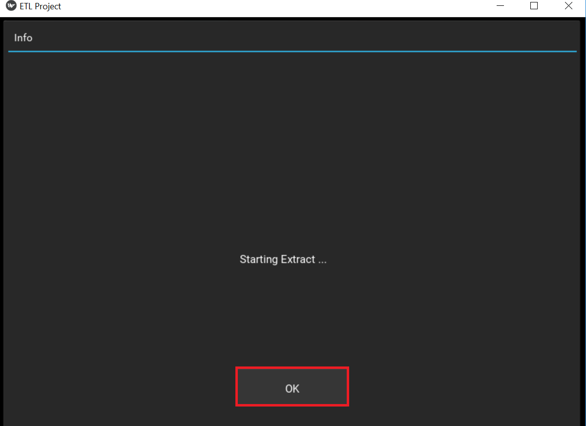

User Manual¶
Installation¶
Application requires Python environment in version 3.6+. Firefox 63.0+ web browser is also required, in case of malfunction (exceptions about lack of access to this binary), please add firefox.exe binary path to system PATH.
For environment in which application can work additional python package (see appendix) are required.
However, by execute dependecy_installer.py script all necessary packages shall be automatically downloaded and installed.
Features description¶
- How to start application:
Application is started as Python application by following command:
py <path to etl>etl.py
In result such main window shall appear:
- Setup city for searching:
First, enter of chosen city is necessary:
Next, push button “Enter”:

- Hotel choosing:
If city name has been correctly entered, then list of no more then 10 most commented hotels appears. One of them shall be selected.
- Extract
When hotel has been chosen then extract of review data is possible:

During this process, modal dialog is visible, and after processing “OK” button is active.

Transform

During this process, modal dialog is visible, and after processing, “OK” button is active (as above).
Load

During this process, modal dialog is visible, and after processing, “OK” button is active (as above).
Whole process

During this process, modal dialog is visible, and after processing, “OK” button is active (as above).
Display database content:
When button “Show Database” is clicked than, in dialog, after hotel choose, content of database for given hotel is shown. Also there is button “Clear” by which database can be cleared.